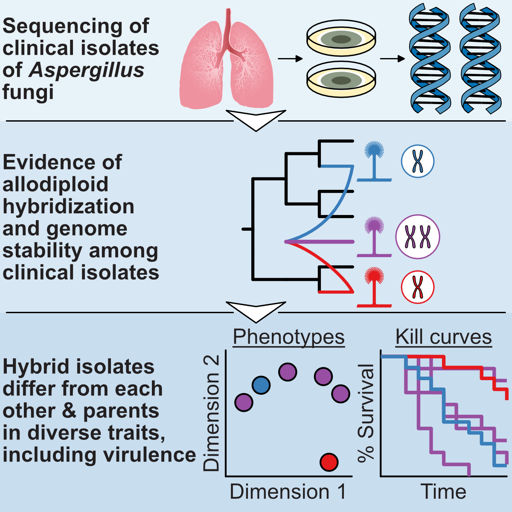
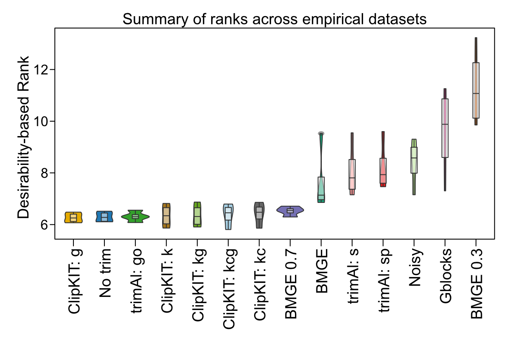

About
I have eclectic interests spanning the sciences and arts. My scientific work blends the fields of computer science, evolution, and genomics to better understand the evolution of fungi. Some questions I address include what causes some fungi to be pathogenic while others are harmless? My artistic endeavors are primarily purpose driven and aim to raise awareness of endangered animals (see my new SciArt shop here).
More broadly, I aim to make education more accessible, promote diversity, equity and inclusion, and build a bridge between scientists and the public. To this end, I am an instructor of an international workshop on phylogenomics, serve on committees across Vanderbilt University that aim to enhance diversity and inclusion, and organize/participate in science-based community engagement events.
Research Interests
Recent representative publications:
Steenwyk et al. (2021) Bioinformatics
Steenwyk et al. (2020) PLOS Biology
Steenwyk and Lind et al. (2020) Current Biology
Steenwyk et al. (2019) mBio
Steenwyk et al. (2019) PLOS Biology
In brief, my research interests integrate the fields of computer science, evolution, and genomics. More specifically, current research objectives leverage the diversity of budding yeasts and filamentous fungi to study the principles and pace of evolution. I also develop computational tools to facilitate these studies.
Budding Yeasts
 The fungal subphylum of budding yeasts, Saccharomycotina, are a remarkably diverse group of organisms. In fact, budding yeast diversity is roughly
on par with the animal and plant kingdoms (see figure from Shen et al. 2018, Cell).
As part of the Y1000+ initiative, sequencing and analysis of 1,000+ budding yeast species is underway.
To date, numerous insights into the tempo and mode of genome evolution across approximately 400 million years have been made. Beyond genome evolution,
numerous insights have also been gleaned into the evolution of budding yeast ecology (e.g.,
LaBella et al. 2021, PLOS Biology). Discoveries have also been made among specific lineages; for example, budding yeast from the genus
Hanseniaspora have lost numerous cell cycle and DNA repair genes (Steenwyk
et al. 2019, PLOS Biology). This discovery is in conflict with current wisdom, which suggests these genes are important to all life.
Evolutionary studies of budding yeasts are likely to yeild more insights into evolutionary principles as well as highlight the amazing flexibility of
genome evolution.
The fungal subphylum of budding yeasts, Saccharomycotina, are a remarkably diverse group of organisms. In fact, budding yeast diversity is roughly
on par with the animal and plant kingdoms (see figure from Shen et al. 2018, Cell).
As part of the Y1000+ initiative, sequencing and analysis of 1,000+ budding yeast species is underway.
To date, numerous insights into the tempo and mode of genome evolution across approximately 400 million years have been made. Beyond genome evolution,
numerous insights have also been gleaned into the evolution of budding yeast ecology (e.g.,
LaBella et al. 2021, PLOS Biology). Discoveries have also been made among specific lineages; for example, budding yeast from the genus
Hanseniaspora have lost numerous cell cycle and DNA repair genes (Steenwyk
et al. 2019, PLOS Biology). This discovery is in conflict with current wisdom, which suggests these genes are important to all life.
Evolutionary studies of budding yeasts are likely to yeild more insights into evolutionary principles as well as highlight the amazing flexibility of
genome evolution.
Steenwyk et al. (2019) PLOS Biology
Shen et al. (2018) Cell
Steenwyk & Rokas (2017) G3
Filamentous Fungi
 Filamentous fungi including species from the genera Aspergillus and Penicillium are of medical and technologic importance. For example, some species pose threats to human or plant health while others produce mainstay pharmaceuticals like penicillin. Studies unraveling the evolutionary history of these genera will help uncover the molecular processes that contribute to some microbes being harmful to humans while others are helpful. In one study, we investigated the evolutionary history of globally distributed clinical isolates of Aspergillus latus, which led to the discovery that A. latus originated from allodiploid hybridization, which refers a hybrid wherein the genome content of both parental species is maintained (see figure from Steenwyk, Lind et al. 2020, Current Biology). Aspergillus hybrids exhibited phenotypic heterogeneity and were distinct from closely related species including their parents and their close relatives. These results suggest that allodiploid hybridization contributes to the evolution of filamentous fungal pathogens. In a separate study, genomic and phenotypic analysis revealed the genomes of nonpathogenic Aspergillus fungi encoded genes known to impact virulence and have similar phenotypic profiles compared to pathogenic species (Steenwyk et al. 2020, Genetics). These findings raise the question of "what makes a pathogen?"
Steenwyk et al. (2021) Microbiology Spectrum
Steenwyk, Lind et al. (2020) Current Biology
Steenwyk et al. (2019) mBio
Software and Methods Development

Research in the biological sciences—such as evolutionary biology, molecular biology, and others—often relies on computational tools. To equip bioinformaticians
with the computational tools necessary to conduct research, I have developed multiple software. For example, ClipKIT
an alignment trimming algorithm that retains phylogenetically informative sites and removes the rest, outperformed other alignment trimming methods across a
total of ~140 thousand alignments (see figure from Steenwyk et al. 2020, PLOS Biology) and
PhyKIT, a toolkit with 35 (and counting) functions, helps process and analyze multiple sequence alignments and
phylogenies to facilitate examining information content in phylogenomic data matrices, conduct evolution-based screens of gene function, identify putative
signatures of rapid radiation events among other things (Steenwyk et al. 2021,
Bioinformatics). A complete list of software I have developed can be found on the software page.
Steenwyk et al. (2021) Bioinformatics
Steenwyk and Rokas (2021) G3
Steenwyk et al. (2020) PLOS Biology
Addressing these questions has been enabled by collaborative efforts. A non-exhaustive list of collaborator/friend labs include the following:
Rokas, Shen,
Hittinger, Oberlies,
and the Goldman laboratories. I am always interested in collaboration
because what we can achieve together is far greater than what we can achieve alone - please feel free to get in touch.